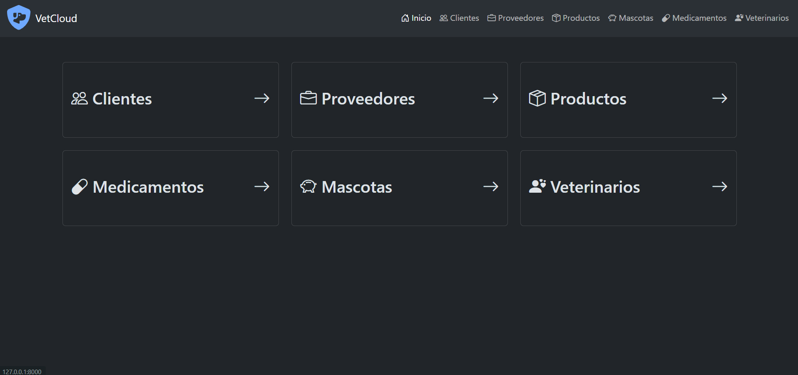
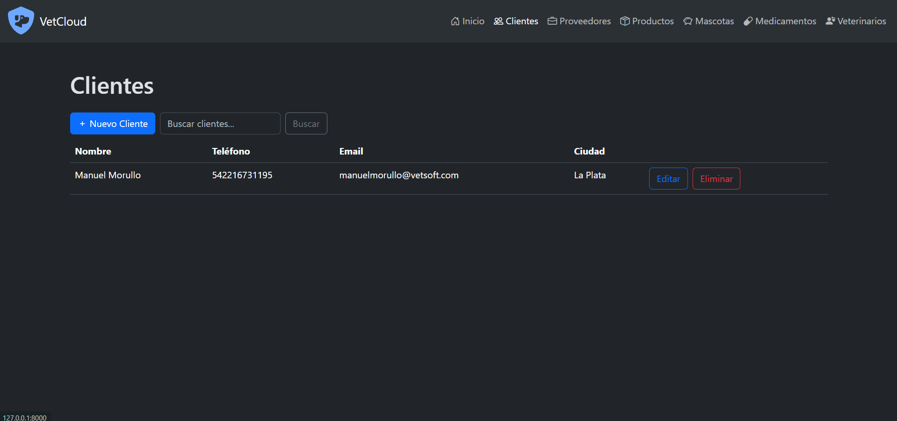
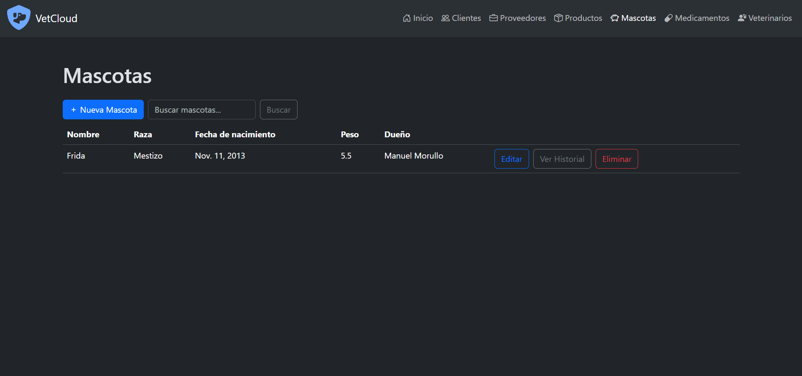
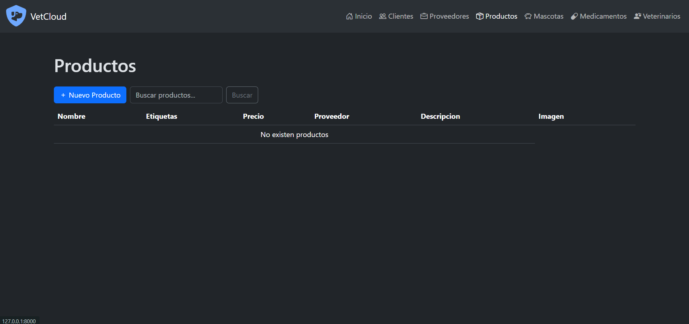
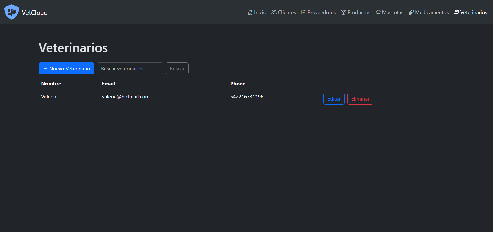

Nombre del proyecto: VetCloud
Descripción: Web app cloud con IA para gestión integral de clínicas veterinarias (clientes, mascotas, inventario).
Tipo: Proyecto Académico (Software Cloud - UTN FRLP)
Rol: Desarrollador Full-Stack
Fecha: Marzo - Julio 2024
Tecnologías Usadas: Python (Django), Azure, PostgreSQL, AI
Ver CódigoEl proyecto consistió en diseñar y construir VetCloud, una plataforma integral para modernizar la gestión de clínicas veterinarias. El desafío principal fue crear un sistema Cloud Native que no solo digitalizara el registro de clientes, mascotas e historias clínicas, sino que también optimizara la carga de datos utilizando Inteligencia Artificial.
Se adoptó una arquitectura basada en la nube (Azure) para garantizar escalabilidad y acceso remoto. El desarrollo se centró en tres pilares:
VetCloud centraliza todas las operaciones de la clínica en la nube. Su característica distintiva es el uso de IA: reconocimiento de objetos para catalogar productos automáticamente y OCR para digitalizar etiquetas de medicamentos, agilizando drásticamente la gestión del inventario.
Módulos interconectados para clientes, mascotas, veterinarios e historias clínicas digitales.
Carga automática de productos y medicamentos mediante reconocimiento de imagen y OCR avanzado.
Desplegado en Azure con almacenamiento de alta disponibilidad y base de datos SQL segura.
Dashboard centralizado para acceso rápido a todas las funcionalidades clave del sistema veterinario.
Alta ultrarrápida de medicamentos mediante visión artificial.
Alojamiento en Azure con máxima disponibilidad global.
Reducción drástica de tiempos operativos en la gestión clínica.
Gestión integral digital de historias clínicas y stock.




